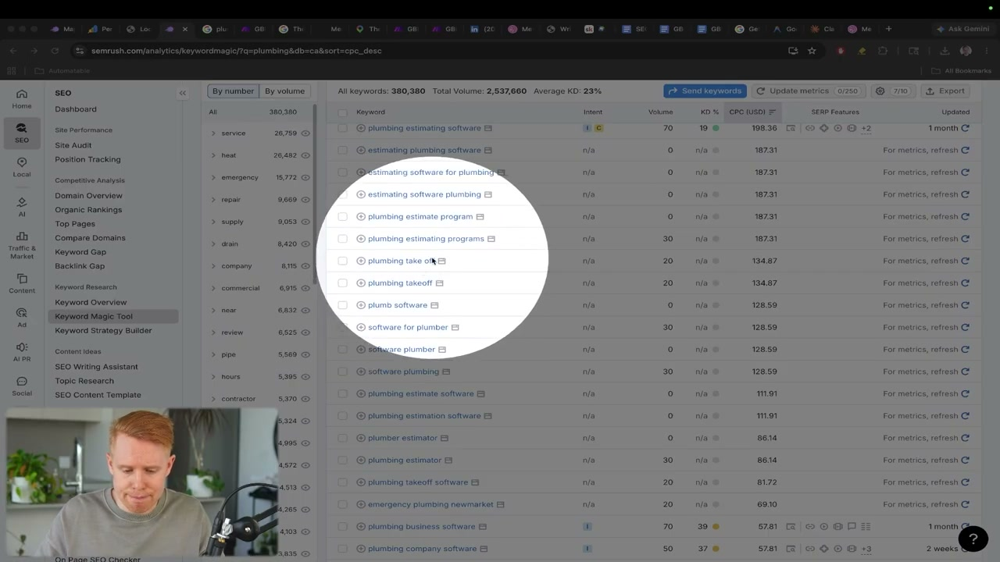
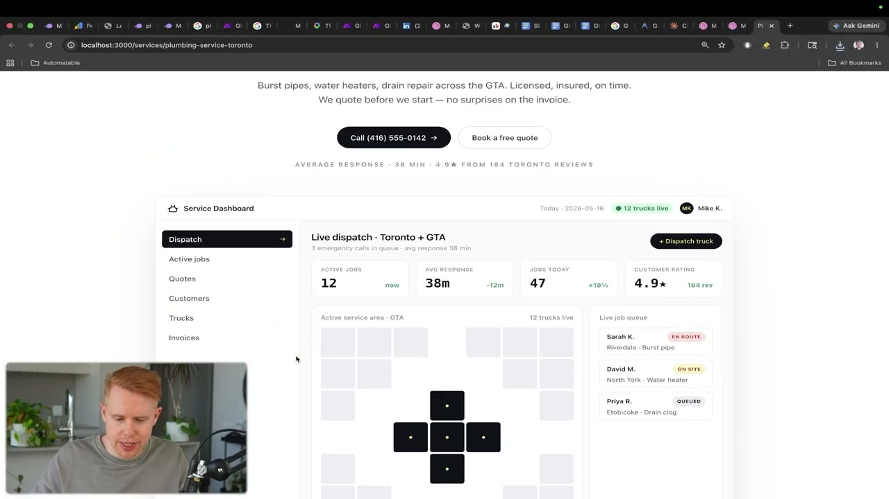
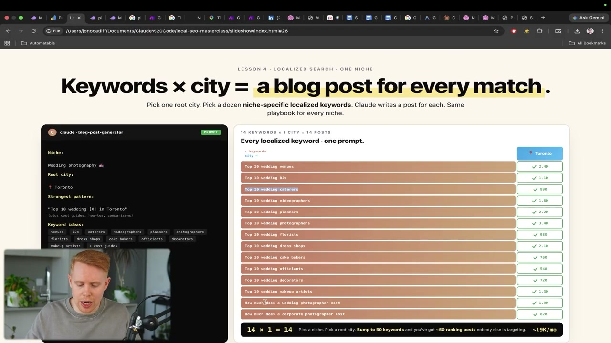
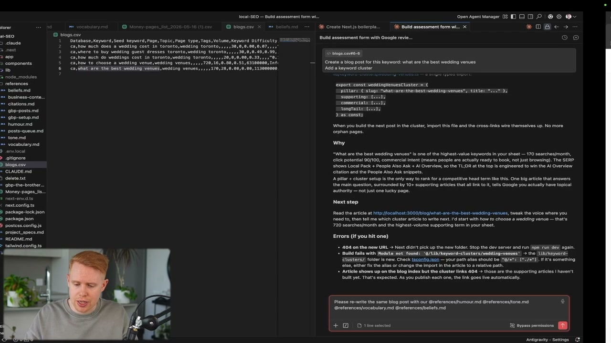
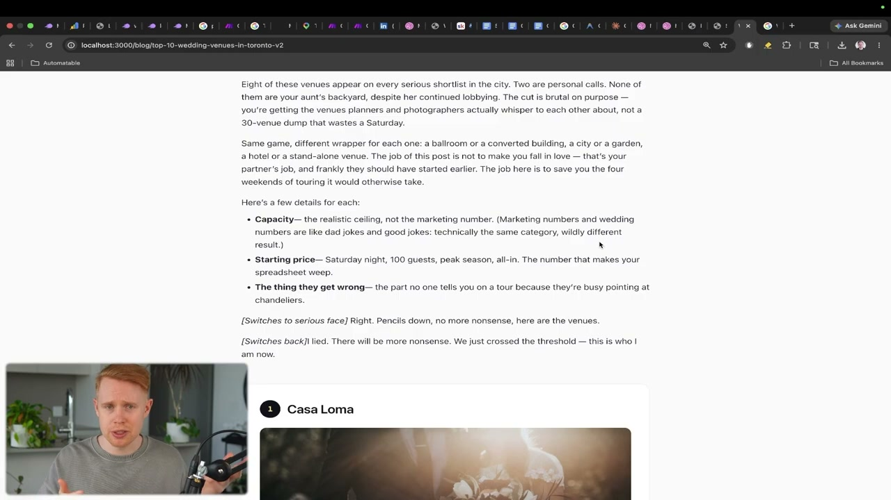
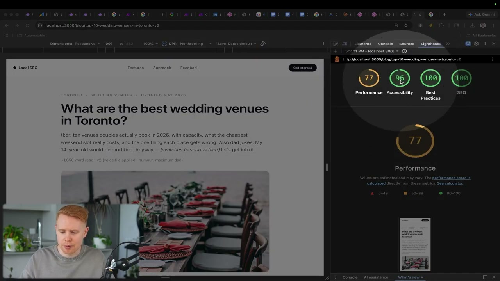
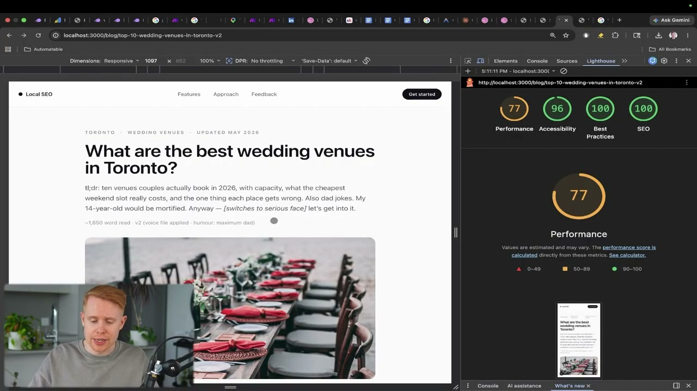
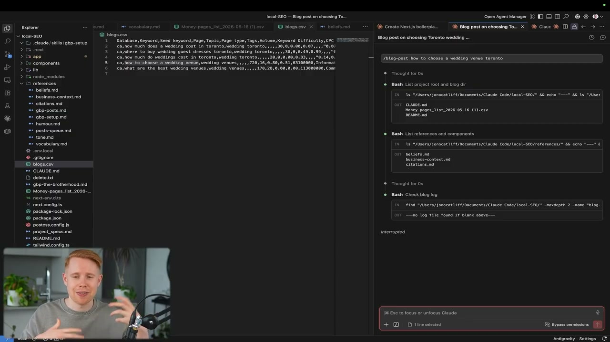
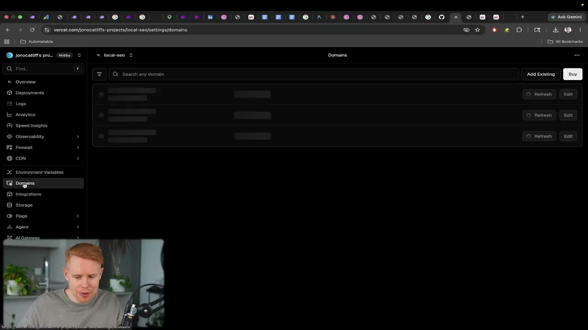
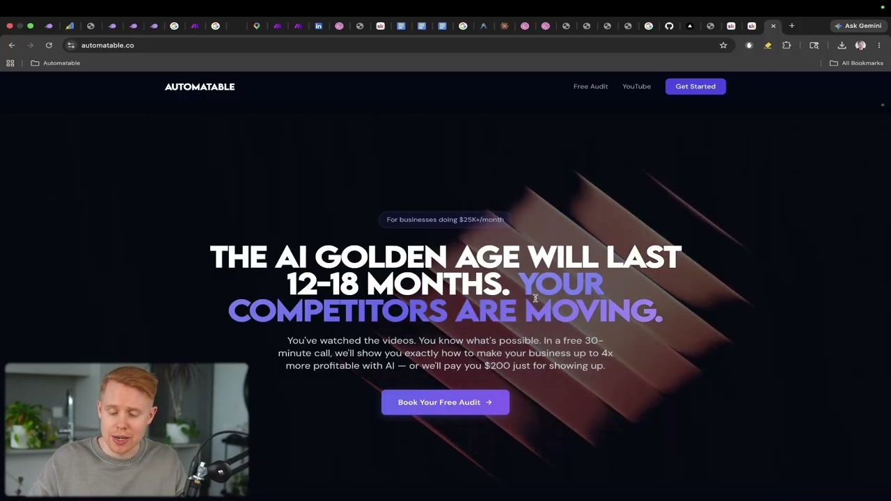

이 글은 전체 3편 중 3편입니다. 긴 영상을 주제 흐름에 맞춰 나누어 정리했습니다.
채널: Jono Catliff | 길이: 1:10:20 | 날짜: 2026-05-26
이 글은 전체 3편 중 3편입니다.
plumbing estimating software 같은 키워드를 보고 CPC가 높다고 해서 그 키워드로 페이지를 만들면 안 된다. 그 키워드는 배관 서비스 고객이 아니라 소프트웨어 구매자를 뜻하기 때문이다. 발표자는 plumbing service Burnaby, emergency plumbing Newmarket처럼 지역명과 서비스 의도가 결합된 키워드를 골라야 실제 리드로 이어질 수 있다고 본다.Money pages라는 리스트를 만들어 둔 상태에서 키워드를 추가하고, 이를 CSV로 export한 뒤 Claude Code로 끌어다 놓는 흐름을 보여준다. 이 CSV는 단순 참고자료가 아니라 서비스 페이지 자동 생성의 입력 데이터가 된다. 핵심은 사람이 키워드별 페이지를 하나하나 기획하지 않고, Claude Code가 페이지 구조와 콘텐츠를 생성하도록 만드는 것이다.
plumbing service Burnaby를 plumbing service Toronto로 바꾸고, 해당 키워드의 서비스 페이지를 만들어 달라고 요청한다. 여기에 Dribbble에서 찾은 웹사이트 디자인 이미지를 함께 넣어 “이 레이아웃을 참고해서 배관 페이지로 만들어 달라”고 지시한다. 이렇게 하면 Claude가 단순 텍스트 페이지가 아니라 실제 랜딩 페이지처럼 보이는 구조를 생성한다.
how to unclog a drain이라는 기본 주제가 있다면 unclog kitchen sink, unclog bathroom sink, drain won't drain, slow draining sink 같은 2차·3차 키워드를 함께 포함할 수 있다. 발표자는 페이지마다 하나의 primary keyword와 여러 secondary keyword를 넣으면 검색 노출 기회가 훨씬 늘어난다고 설명한다. Claude에게 “이 서비스 페이지를 위한 keyword cluster를 만들고 4~5개의 다른 키워드도 함께 랭킹되게 해 달라”고 요청하면 된다는 것이다.top 10 wedding venues처럼 전 세계 어디에나 해당되는 키워드는 넓은 유입은 만들 수 있지만 실제 고객 지역과 맞지 않을 수 있다. 그래서 top 10 wedding venues in Toronto, top 10 wedding DJs in Toronto, how much does a wedding photographer cost in Toronto처럼 도시명을 붙여야 한다. 특히 비용 관련 검색어는 지역마다 가격이 다르기 때문에 로컬 의도가 강하다고 설명한다.
wedding venues는 검색량이 많지만 너무 넓고, wedding venues in Toronto는 검색량이 줄어드는 대신 훨씬 구체적이다. wedding venues in Toronto Ontario와 wedding venues in Toronto처럼 거의 같은 의미의 키워드를 각각 별도 글로 만들면 keyword cannibalism이 생길 수 있다. 반면 garden wedding venues처럼 의도와 독자가 다르면 별도 글로 만들 가치가 있다.What are the best wedding venues in Toronto 2026 guide 초안을 보고 재미도, 개성도, 유머도 없다고 평가한다. 많은 사람이 여기서 포기하지만, 발표자는 이 초안을 브랜드의 신념, 유머, 말투, 어휘를 반영해 다시 쓰는 것이 중요하다고 말한다. 또한 Google에서 해당 키워드의 상위 3개 글을 조사하게 해 평균 글자 수, H2 수, 이미지 수, 관련 키워드 등을 뽑아 반영하라고 권한다.



/blog 또는 blog-post 같은 명령 하나로 전체 프로세스를 실행하게 만드는 것이다. 이 skill은 아직 쓰지 않은 키워드를 CSV에서 골라오고, 상위 3개 Google 결과를 조사하고, 평균 단어 수·H2·이미지 수 등을 반영하고, on-page 및 technical SEO 최적화까지 수행하도록 설계된다. 또한 생성한 글을 기록해 같은 키워드를 중복으로 만들지 않게 하는 점도 중요하다.


3편의 시작점은 앞선 파트에서 설명한 로컬 SEO 전략을 실제 키워드 발굴 작업으로 옮기는 장면이다. 발표자는 “전략을 이해했으니 이제 실제로 이 키워드를 찾아야 한다”고 말하며 Semrush를 연다. 핵심 전제는 SEO 페이지를 아무 키워드로나 만들면 안 된다는 것이다. 검색어마다 잠재 유입량과 상업적 가치가 다르고, 잘못된 키워드를 고르면 페이지를 만들어도 리드가 거의 나오지 않는다.
Semrush에서는 SEO 메뉴의 Keyword Magic Tool을 사용한다. 예시 키워드는 plumbing이고, 결과는 CPC USD가 높은 순서로 정렬한다. 발표자는 CPC가 높은 키워드는 사람들이 실제로 고객을 얻기 위해 광고비를 쓰는 검색어라고 해석한다. 즉, CPC는 단순 광고 지표가 아니라 로컬 SEO에서 “이 검색어를 잡으면 돈이 될 가능성이 있는가”를 판단하는 간접 신호로 쓰인다.
발표자는 CPC가 높은 키워드라고 무조건 선택하지 않는다. 예를 들어 plumbing estimating software, plumbing estimate program, software for plumber 같은 키워드는 CPC가 높고 상업성도 있지만, 배관 서비스 회사가 팔고 싶은 서비스와 다르다. 배관 회사가 소프트웨어를 판매하는 것이 아니라면 이런 키워드로 랭킹을 노려서는 안 된다. 검색 의도와 사업 모델이 맞아야 한다는 점을 실제 목록을 보며 설명한다.
반대로 plumbing service Burnaby, plumbing Berry, emergency plumbing Newmarket 같은 키워드는 지역과 서비스가 결합되어 있어 로컬 페이지로 만들기 적합하다. 발표자는 이런 키워드들을 리스트에 추가한다. 이때 같은 페이지로 커버할 수 있을 정도로 유사한 키워드인지, 아니면 별도 서비스 페이지가 필요한 다른 서비스인지도 구분한다. 이것이 이후 keyword cannibalism 문제를 피하는 기준과 연결된다.
선별한 키워드는 Semrush 리스트에 저장한다. 발표자는 Money pages라는 리스트를 이미 만들어 두었고, 선택한 키워드를 그 리스트로 보낸다. 이후 리스트를 CSV로 export한다. 이 CSV는 Claude Code에 업로드하거나 드래그해서 넣을 수 있다.
Claude Code에 들어간 키워드는 페이지 생성의 원재료가 된다. 발표자는 plumbing service Burnaby를 예로 들다가 실제 데모 도시인 Toronto에 맞춰 plumbing service Toronto로 바꾼다. 그리고 “이 키워드로 서비스 페이지를 만들어 달라”고 지시한다. 이렇게 하면 Claude Code가 해당 키워드를 목표로 한 페이지 구조, 문구, 섹션을 생성한다.
발표자는 AI가 만든 페이지가 보기 흉하지 않게 하려면 스타일 지시가 필요하다고 말한다. 그래서 Dribbble에 들어가 facebook ads website 같은 검색어로 예쁜 웹사이트 디자인을 찾는다. 마음에 드는 이미지를 저장한 뒤 Claude 프롬프트에 업로드한다. 지시는 “이 스크린샷의 페이지 레이아웃을 복사하되 배관 페이지로 만들어 달라”는 방식이다.
이 방법의 목적은 디자인 자체를 사람이 처음부터 만들지 않는 것이다. Claude는 레퍼런스의 레이아웃 감각을 참고해 대시보드형 구조, CTA, 서비스 정보 배치 등을 비슷하게 구성한다. 결과 페이지는 로컬호스트에서 services/plumbing-service-toronto 같은 경로로 확인된다. 발표자는 생성 결과가 레퍼런스와 비슷한 페이지 레이아웃을 갖췄고 전반적으로 괜찮다고 평가한다.
서비스 페이지를 만들 때 발표자가 나중에 덧붙이는 중요한 지시가 있다. 프롬프트에 “static site generation site로 만들어 달라”고 넣으라는 것이다. 발표자는 이 지시만으로 Claude Code가 SEO에 유리한 방식으로 페이지를 구성하도록 만들 수 있다고 설명한다. 이는 페이지가 검색엔진에 잘 읽히도록 사전 렌더링된 형태에 가깝게 만들라는 실무적 지시다.
이 부분에서 발표자는 복잡한 기술 설명을 하지 않는다. 핵심은 “이 한 줄을 넣으면 된다”는 식의 실행 지침이다. 로컬 사업자나 비개발자가 모든 렌더링 방식을 이해하지 않아도, Claude Code에 적절한 목표를 주면 SEO 친화적인 페이지 생성이 가능하다는 메시지다.
발표자는 하나의 페이지가 하나의 키워드만 노리는 상태에서 멈추지 말라고 말한다. 이를 설명하기 위해 keyword cluster 개념을 소개한다. 한 페이지에는 primary keyword가 있고, 그 주변에 secondary 및 tertiary keyword가 붙을 수 있다. 이렇게 하면 한 페이지가 여러 검색어에 대해 동시에 랭킹될 수 있다.
예시는 배수구 막힘 관련 키워드다. how to unclog a drain을 주요 키워드로 잡고, unclog kitchen sink, unclog bathroom sink, drain won't drain, slow draining sink 등을 함께 넣을 수 있다. 발표자는 Claude에게 “이 서비스 페이지를 위한 keyword cluster를 만들고 4~5개의 다른 키워드도 랭킹되게 해 달라”고 요청하면 된다고 설명한다. 결국 페이지 하나하나가 여러 검색 기회를 가진 자산이 되는 구조다.
다음 주제는 localized blog posts다. 일반 블로그 글은 top 10 wedding venues처럼 전 세계 어디서든 검색될 수 있는 키워드를 노릴 수 있다. 하지만 로컬 비즈니스는 그런 전 세계 트래픽보다 실제 서비스 지역의 고객이 필요하다. 그래서 키워드 끝에 도시명을 붙여야 한다.
발표자는 Toronto를 예로 들어 top 10 wedding venues in Toronto, top 10 wedding DJs in Toronto, top 10 wedding caterers in Toronto, how much does a wedding photographer cost in Toronto 같은 키워드를 제시한다. 특히 비용 관련 글은 지역성이 강하다. Toronto의 웨딩 사진가 비용은 India의 비용과 다를 수 있기 때문이다. 이처럼 도시명을 붙이면 검색량은 줄어도 구매 의도와 지역 적합성이 올라간다.
발표자는 웨딩 사진업을 예로 들며 콘텐츠 주제를 넓히는 방법을 설명한다. 웨딩 사진작가라면 웨딩 사진 키워드만 쓰는 것이 자연스럽지만, 실제 고객은 웨딩 DJ, 웨딩 케이터러, 웨딩 장소, 플로리스트 등 여러 서비스를 함께 찾는다. 따라서 top 10 wedding DJs in Toronto 같은 글도 잠재 고객을 끌어오는 통로가 될 수 있다. DJ를 찾는 사람은 사진작가도 필요할 가능성이 높기 때문이다.
이 접근은 SEO를 단순히 자기 서비스명 검색어 확보로 보지 않는다. 고객이 구매 여정에서 검색하는 주변 질문과 비교 검색까지 공략하는 방식이다. 발표자는 이를 통해 “next of kin industries”, 즉 인접 산업의 검색 트래픽을 활용할 수 있다고 설명한다. 이는 로컬 SEO에서 콘텐츠 풀을 빠르게 확장하는 핵심 전술이다.
Semrush에서 wedding venues를 검색하면 검색량이 큰 키워드들이 많이 나온다. 하지만 Toronto를 붙이면 훨씬 로컬화되고 검색량도 줄어든다. 예시로 wedding venues in Toronto Ontario와 wedding venues in Toronto가 나오는데, 발표자는 이 둘은 매우 비슷하므로 둘 다 별도 글로 만들지 않을 것이라고 말한다. 이유는 keyword cannibalism 때문이다.
Keyword cannibalism은 거의 같은 키워드에 대해 여러 페이지를 만들면서 서로 순위를 빼앗는 상황이다. 발표자는 “정확히 같은 키워드”에 대해 여러 블로그 글이나 서비스 페이지를 만들면 안 된다고 강조한다. 반면 garden wedding venues는 더 구체적인 니치이고 다른 검색 의도를 가진다. 이런 경우에는 별도 글로 만들 수 있다.
Claude가 만든 첫 블로그 초안은 매우 평범하다. 제목은 What are the best wedding venues in Toronto 2026 guide 형태이고, 문장은 일반적인 AI 글처럼 무미건조하다. 발표자는 이 글에 유머도, 성격도, 개성도 없다고 평가한다. 이것이 많은 사람이 AI 콘텐츠를 만들고도 성과를 내지 못하는 지점이라고 본다.
개선 방법은 두 가지다. 첫째, 브랜드의 신념, 유머, 톤, 어휘, 말투를 참고해 글을 다시 쓰게 한다. 둘째, Google에서 해당 키워드 상위 3개 글을 조사하게 한다. 발표자는 상위 글들의 평균 단어 수, H2 수, 이미지 수, 관련 키워드 등을 가져와 반영하라고 설명한다. 상위 3개 결과는 이미 Google에서 작동하고 있는 글이므로, 그 평균적 구조를 참고하는 것이 바퀴를 다시 발명하는 것보다 낫다는 논리다.
발표자는 “content is king”이라는 관점을 강하게 밀어붙인다. SEO에는 수많은 지표와 최적화 방법이 있지만, 콘텐츠가 형편없으면 사람들은 읽지 않는다. 읽지 않는 글은 아무리 최적화해도 한계가 있다. 그래서 AI 콘텐츠가 순위를 못 잡는 이유는 대개 기술적 최적화 부족보다 글 자체가 재미없고 읽을 가치가 없기 때문이라고 본다.
그가 추천하는 가장 강력한 방법은 유머다. 유머가 있으면 글이 더 즐겁고, 독자가 더 오래 머물며, 더 깊게 스크롤하고, 이탈률이 낮아질 가능성이 높다. 이런 행동은 Google에 “사람들이 이 글에 반응한다”는 신호를 보낸다. 발표자는 이 신호가 순위 상승에 기여할 수 있다고 설명하며, SEO 콘텐츠를 단순 정보 전달물이 아니라 읽히는 글로 만들어야 한다고 강조한다.
이후 발표자는 블로그 글을 on-page SEO와 technical SEO로 최적화하는 단계로 넘어간다. 그는 과거에는 이런 작업이 전담팀의 일이었다고 말한다. HomeStars 같은 기업은 on-page SEO, off-page SEO, technical SEO를 각각 담당하는 팀이 있을 수 있다. 하지만 작은 사업자가 이를 모두 직접 처리하는 것은 현실적으로 너무 어렵다.
해결책은 체크리스트 전체를 Claude Code에 붙여 넣는 것이다. “이 체크리스트에 따라 블로그 글을 on-page SEO에 맞게 최적화해 달라”고 요청하면 된다. 체크리스트에는 제목, 헤더, 내부 링크, 외부 링크, 이미지, 메타 요소, 콘텐츠 구조 같은 항목들이 포함될 수 있다. 발표자는 이 작업이 Claude Code에서는 몇 초 만에 자동으로 진행될 수 있다고 말한다.
Technical SEO는 Chrome 개발자 도구의 Lighthouse를 사용한다. 브라우저에서 세 점 메뉴를 누르고 More Tools, Developer Tools로 들어간 뒤 Lighthouse 탭을 찾는다. 찾기 어렵다면 상단의 추가 메뉴나 화살표를 눌러 Lighthouse를 선택하면 된다. 중요한 조건은 반드시 mobile 기준으로 분석하는 것이다.
예시 결과에서는 Performance 77, Accessibility 96, Best Practices 100, SEO 100이 나온다. 발표자는 Performance 77은 페이지가 느리다는 뜻이고, 이를 고치면 Google에서 더 좋은 평가를 받을 수 있다고 설명한다. 예전에는 missing source maps, large JavaScript, contrast, unused JavaScript 같은 항목을 직접 이해해야 했지만 이제는 그럴 필요가 없다고 말한다. Lighthouse의 문제 항목을 펼치고 전체 내용을 복사해 Claude에게 “technical SEO를 고쳐 달라”고 붙여 넣으면 된다는 것이다.
Claude가 수정한 뒤 다시 Lighthouse를 돌리면 점수가 개선된다. 예시에서는 performance가 77에서 82로 올라간다. 발표자는 한 번에 100이 되지 않을 수 있으며, 여러 번 반복해야 한다고 말한다. 그래도 전체 과정은 5~10분 정도면 충분하다고 주장한다.
이때도 비교 기준은 일관되어야 한다. 처음에는 모바일로 측정하고 두 번째는 데스크톱으로 측정하면 apples to apples 비교가 아니다. 같은 조건에서 반복 측정해야 실제 개선 여부를 알 수 있다. 발표자는 과거 SEO 팀들이 하던 일을 훨씬 짧은 시간에 처리하는 사례로 이 과정을 보여준다.
On-page SEO 결과의 예로 발표자는 링크 구성을 든다. 외부 링크는 제3자 페이지로 가는 링크이고, 내부 링크는 자기 사이트 안의 다른 페이지로 가는 링크다. 예시 블로그에서 Casa Loma 항목은 실제 URL을 가져와 연결되고, Google Maps로 보는 링크도 붙는다. 이는 독자가 장소 정보를 검증하거나 다음 행동을 하기 쉽게 만든다.
내부 링크는 사이트 안의 관련 블로그 글이나 서비스 페이지로 연결될 수 있다. 발표자는 Claude가 처음부터 완벽하게 내부 링크를 구성하지 않을 수 있다고 말한다. 그래서 결과를 확인하고 필요한 경우 다시 요청해야 한다. 하지만 기본적인 on-page SEO 요소의 상당 부분은 Claude가 처음부터 잘 만들어 줄 수 있다고 평가한다.
발표자는 블로그 글 하나, 랜딩 페이지 하나, Google Business Profile 포스트 하나를 만드는 것만으로는 충분하지 않다고 말한다. 하루에 블로그 글 4개를 만들고 싶거나 여러 페이지를 계속 만들려면 매번 같은 과정을 반복하면 안 된다. 그래서 Claude Code의 skill 개념을 소개한다. 하나의 명령어로 전체 작업을 실행하는 재사용 가능한 템플릿을 만드는 것이다.
예시는 /blog 또는 blog-post skill이다. 이 skill은 블로그 키워드 목록에서 아직 만들지 않은 키워드를 하나 가져온다. 상위 3개 Google 결과를 조사해 평균 단어 수, H2 수, 이미지 수 등을 분석한다. 그런 다음 브랜드 톤, on-page SEO, technical SEO를 반영해 글을 만들고, 생성된 키워드를 기록해 중복 생성을 막는다.
Skill이 적용되려면 새 채팅을 열어야 한다고 설명한다. 새 채팅에서 blog-post how to choose a wedding venue toronto처럼 입력하면 전체 블로그 생성 프로세스가 자동으로 돌아가는 구조다. 사용자는 더 이상 상위 글 조사, 평균값 계산, 글 작성, SEO 최적화, 기술 최적화 요청을 매번 따로 입력하지 않아도 된다. 발표자는 이를 “방금 한 일을 병에 담아 재사용 가능한 템플릿으로 만드는 것”처럼 설명한다.
이 방식은 블로그 글에만 국한되지 않는다. 같은 원리로 랜딩 페이지 skill, Google Business Profile 포스트 skill도 만들 수 있다. 즉, 로컬 SEO에서 반복되는 산출물을 각각 명령어 하나로 만들게 하는 자동화 체계를 구축하는 것이다. 발표자의 전체 방법론은 단발성 페이지 제작이 아니라 SEO 콘텐츠 공장을 만드는 데 가깝다.
마지막 실습은 사이트 배포다. 지금까지 만든 페이지는 로컬호스트에서만 볼 수 있다. 로컬호스트는 Claude가 만든 파일을 자기 컴퓨터 브라우저에서 렌더링하는 상태이며, 인터넷의 다른 사람은 접근할 수 없다. 그래서 실제 고객과 Google이 접근할 수 있는 라이브 사이트로 배포해야 한다.
배포 과정은 세 단계다. 먼저 GitHub 계정을 만들고 새 repository를 생성한다. 발표자는 저장소 이름을 원하는 대로 정하고 private으로 설정하라고 말한다. 이후 GitHub가 보여주는 명령어를 복사해 Claude에게 “이 프로젝트 전체를 GitHub에 push해 달라”고 요청한다.
GitHub에 코드가 올라가면 Vercel로 이동한다. Vercel에서도 계정을 만들고 GitHub를 연결한 뒤 Add New Project를 클릭한다. GitHub 저장소를 import하고 application preset을 Next.js로 맞춘다. 발표자는 이 프로젝트가 Next.js 프레임워크로 만들어졌기 때문에 이 설정이 필요하다고 설명한다.
Deploy를 클릭하면 30~60초 안에 사이트가 live 상태가 된다. 대시보드에서 링크를 클릭하면 누구나 볼 수 있는 웹사이트가 열린다. 다만 기본 Vercel 도메인은 실제 비즈니스에 쓰기에는 매력적이지 않을 수 있다. 그래서 Vercel의 Domains 탭에서 도메인을 사거나, Namecheap 같은 곳에서 산 도메인을 연결하라고 안내한다.
영상 말미는 교육 및 서비스 제안이다. 발표자는 이 영상과 다른 YouTube 영상의 무료 blueprint가 자신의 무료 School 커뮤니티에 있다고 안내한다. Classroom 섹션의 Free YouTube Blueprints에서 다운로드할 수 있다고 말한다. 자동화나 비즈니스 개선을 시작하려는 사람에게 좋은 출발점이라고 소개한다.
유료 커뮤니티에는 두 가지 transformation이 있다고 설명한다. 첫째는 프리랜서나 자동화 비즈니스를 만들고 싶은 사람을 위해 30일 안에 첫 거래를 찾고, 성사시키고, 납품하는 방법이다. 둘째는 Claude Code 같은 도구를 사용해 비즈니스의 최대 80%를 자동화하는 방법이다. 마지막으로 직접 자동화하기 싫은 사업자는 그의 agency와 무료 30분 상담을 할 수 있고, 상담에서는 AI로 수익성을 높이는 로드맵을 보여주며, 보여주지 못하면 200달러를 지급하겠다고 제안한다.
“모든 키워드가 같은 가치를 갖는 것은 아니다.”
키워드마다 월간 유입과 상업성이 다르므로, Semrush에서 CPC와 검색 의도를 기준으로 골라야 한다는 핵심 전제다.
“CPC가 높은 키워드는 누군가 고객을 얻기 위해 돈을 쓰는 키워드다.”
발표자는 광고비 지출 여부를 로컬 SEO에서 돈이 되는 검색어를 찾는 단서로 사용한다.
“정확히 같은 키워드로 여러 페이지를 만들면 안 된다.”
이는 keyword cannibalism을 피하라는 조언이며, 유사 키워드는 하나의 페이지나 클러스터로 묶는 것이 더 적합하다는 의미다.
“블로그 글은 지루하다. 사람들은 답을 얻고 나가려 한다.”
그래서 SEO 콘텐츠는 단순 정보 제공을 넘어 독자가 오래 읽을 만한 문체와 유머를 갖춰야 한다고 강조한다.
“콘텐츠가 형편없으면 최적화를 해도 소용없다.”
기술적 SEO보다 먼저 사람이 실제로 읽고 싶어 하는 콘텐츠를 만들어야 한다는 메시지다.
“Lighthouse 문제를 복사해 Claude에게 고치라고 하면 된다.”
technical SEO를 전문가만 다룰 수 있는 영역이 아니라 Claude Code로 빠르게 반복 개선할 수 있는 작업으로 바꾸는 장면이다.
“Skill로 병에 담아 반복해서 호출한다.”
블로그, 랜딩 페이지, Google Business Profile 포스트 제작 과정을 명령어 하나로 재사용 가능한 시스템으로 만드는 것이 핵심이다.
“로컬호스트는 인터넷에 공개된 것이 아니다.”
GitHub와 Vercel을 통해 실제 라이브 사이트로 배포해야 검색엔진과 고객이 접근할 수 있다는 설명이다.
이 3편의 핵심은 로컬 SEO를 “감으로 글 쓰는 작업”이 아니라 “키워드 데이터, AI 생성, 콘텐츠 품질 개선, SEO 점검, 자동화, 배포”가 연결된 생산 시스템으로 만드는 것이다. Semrush로 돈이 되는 로컬 키워드를 찾고, Claude Code로 서비스 페이지와 블로그 글을 만들며, Dribbble 레퍼런스로 디자인 품질을 보강하고, keyword cluster로 페이지당 검색 기회를 늘린다. 이후 브랜드 톤과 유머를 넣어 AI 초안의 밋밋함을 제거하고, 상위 경쟁 글의 평균 구조를 참고해 검색 결과에서 이미 작동하는 패턴을 반영한다.
실무적으로 가장 중요한 시사점은 세 가지다. 첫째, 로컬 SEO는 지역명과 구매 의도가 결합된 키워드를 체계적으로 모으는 것에서 시작해야 한다. 둘째, AI 콘텐츠는 그대로 발행하는 것이 아니라 브랜드 보이스, 경쟁사 분석, 사용자 체류 신호를 고려해 다시 써야 한다. 셋째, on-page SEO와 technical SEO, 배포, 반복 생성은 skill과 GitHub/Vercel을 통해 자동화해야 규모가 난다.
발표자의 방법론은 소규모 사업자나 1인 운영자가 과거 전담 SEO 팀이 하던 일을 훨씬 짧은 시간에 흉내 낼 수 있게 만드는 데 초점이 있다. 다만 Claude가 만든 결과가 처음부터 완벽하다고 전제하지 않고, Lighthouse 점수와 링크 작동, 내부 구조, 콘텐츠 톤을 반복 확인해야 한다. 결국 성공의 기준은 “AI로 페이지를 많이 만들었다”가 아니라, 사람들이 실제로 읽고, 오래 머물고, 검색엔진이 이해할 수 있으며, 인터넷에 제대로 배포된 로컬 검색 자산을 꾸준히 쌓는 것이다.
댓글
GitHub 이슈 기반 댓글 시스템입니다.